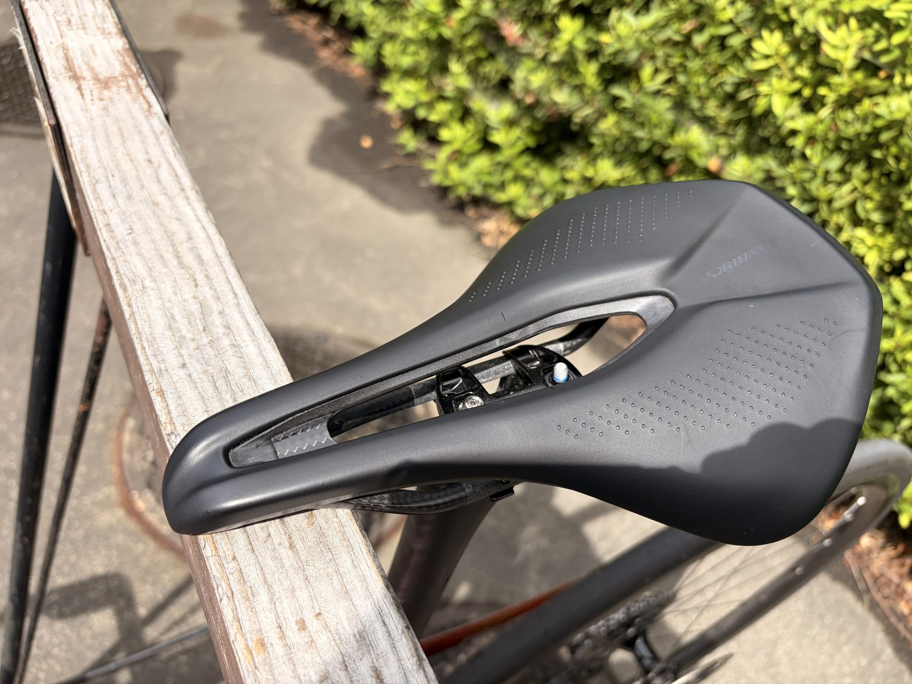

唐沢ゴルビー5本完遂。5本目が一番踏めた日
富士ヒルゴールドを目指す実験は、今日もAIにメニューを出されるところから始まった。内容は外の登りを使った5分走。いわゆるゴルビー寄りのメニューである。
最初に言われていたのは、5分×3本を305W以上で揃えられたら成功、調子が良ければ4本という内容だった。つまり、最初から5本やる予定ではない。ところが走り出してみたら脚がよく回った。これはいける日だと思って、結局5本やった。

予定より増えた唐沢ゴルビー
今日のメニューは、外の登りを使った5分走。ローラーではなく実走なので、勾配や路面、コーナー、下りの戻り方でリズムが変わる。室内のように同じ条件で踏み続けるわけではないが、富士ヒルに向けた「登りで5分踏む力」を見るにはかなり良い。
当初の成功ラインは305W以上で3本。調子が良ければ4本。実際には全本330W以上で5本までいけた。予定表を見ているAIより、現場の脚のほうが今日は強気だった。珍しいこともある。
5分走5本の中身
5分走は、331W、339W、337W、330W、340W。5本平均は約335Wで、体重75kg換算だと約4.47W/kg。FTP設定275Wで見ると約122％FTPになる。
以前やった無酸素寄せゴルビーは、340W、341W、328W、318W、319Wという並びだった。最初の2本は強いが、後半で少し落ちている。それに対して今回は、4本目で330Wまで落ちたものの、5本目に340Wまで戻せた。
これはかなり良い。最初だけ元気だったというより、5分のきつさを5本分ちゃんと処理できた感じがある。心拍も5分走の平均で153〜154bpm付近に揃っていて、心肺だけが先に爆発している感じではなかった。
脚がきれいに回った感覚
今日一番良かったのは、数字よりも感覚だった。脚がきれいに回っている感じがあった。力任せに踏みつぶしているというより、ペダリングが噛み合っている感覚。
もちろん5分走なので、普通にきつい。楽しいサイクリングの顔をした高強度である。ただ今日は、そのきつさが我慢できる種類のきつさだった。「もう無理」ではなく「きついけど、このままいける」に近い。
富士ヒル本番も、楽に走ってゴールドを取れるわけではない。どこかで苦しい時間を受け入れる必要がある。今日の5分走は、その受け入れ方が少し上手くなってきた気がした。
アクティブレストが効いたかもしれない
昨日は完全休養ではなく、軽く動く方向にした。最近、自分にはフルレストよりもアクティブレストのほうが合っている場面があるのではないかと思い始めている。
完全に休むと脚が重くなることがある。逆に、軽く回して血流を入れた翌日のほうが脚がスッと動くことがある。もちろん疲労が濃い時は完全レストも必要だが、今日の脚の回り方を見ると「明日のために軽く動く」はかなり有力な選択肢になりそうだ。
目安としては20〜45分くらい。100〜150W中心で、坂もダッシュもなし。練習ではなく血流を回すだけ。休むのが下手な人間には、こういう逃げ道があると助かる。
S-WORKS Power 155mmの尻問題
もうひとつ、今日かなり大きかったのがサドルだった。S-WORKS Power 155mmにしたら、お尻の痛みがかなり減った。というより、今日のライドではほぼ気にならなかった。
現時点で155mmという幅がベストなのかはまだ分からない。ただ、Powerサドルの形状とはかなり相性が良さそうだ。私はわりとサドルの前の方に座るので、ショートノーズで前寄りに座った時の支えがあるのは助かる。
155mmだと太ももへの干渉が少し心配だったが、今日のゴルビーではケイデンスが上がる場面でも脚が回しにくい感覚はなかった。お尻は痛くない。脚も回る。太ももも今のところ邪魔ではない。サドル沼にしては珍しく、今日は水面が穏やかだった。

今回やってみて思ったこと
今日の収穫は、5本のパワーそのものだけではない。脚がきれいに回る感覚。きつさを我慢できる感覚。アクティブレストが自分に合うかもしれない感覚。そして、サドルが合うと高強度中のストレスがかなり減るという発見。
富士ヒルに向けて、ローラーで長く踏める力を作るのは大事だと思う。でも、外の登りで5分高強度を揃える力もかなり大事だ。今日はその天井を少し押し上げられた気がする。
唐沢ゴルビー5本、完遂。しかも5本目が一番踏めた。今日のメニューはかなり良かった。AIに相談してよかった日として記録しておく。素直にありがとうで締めたい。
自分用メモ
- メニュー外の登りで5分走。予定は3〜4本、実際は5本
- 5分走331W / 339W / 337W / 330W / 340W。5本平均約335W
- W/kg75kg基準で5本平均約4.47W/kg。NP257Wは約3.43W/kg
- 全体30.25km / 1時間26分 / 獲得標高648m / 平均167W / TSS124.6
- 心拍平均129bpm / 最大166bpm。5分走中の平均は153〜154bpm付近
- 機材Aethos2。S-WORKS Power 155mmはお尻の痛みがかなり少なく、しばらく基準にする
- 翌日方針連続でゴルビーはしない。走るならSST〜テンポ寄りで、重ければアクティブレスト